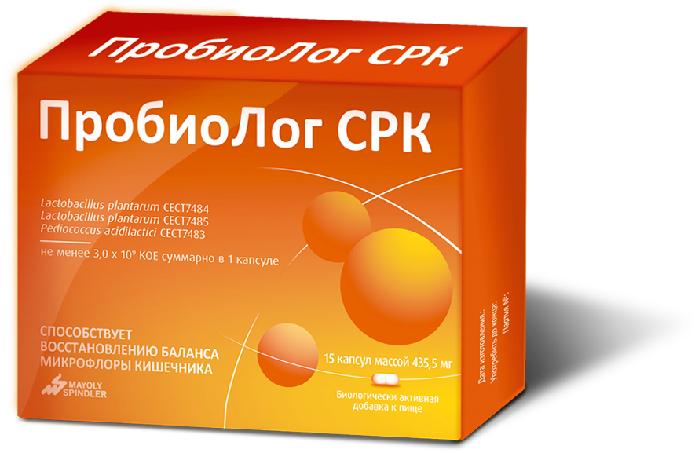
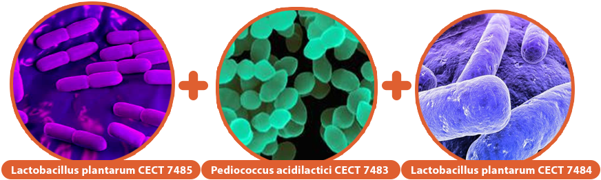
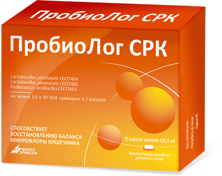
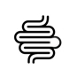
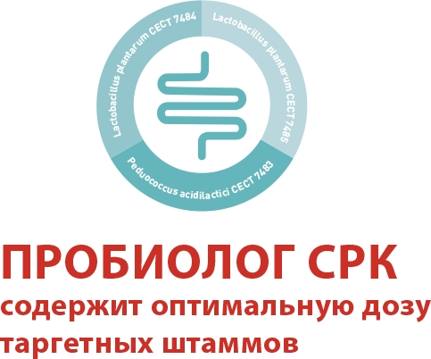
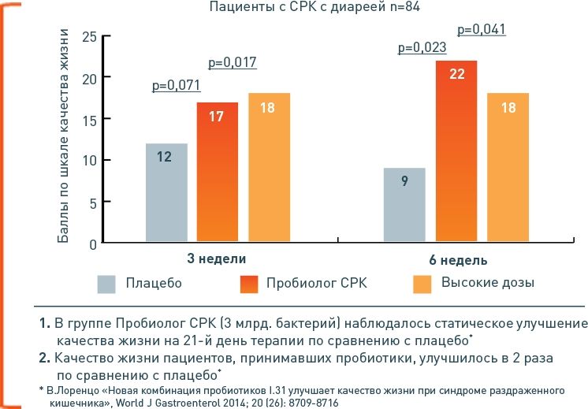

Пробиолог Форте № RU.77.99.11.003.Е.001789.04.17 от 12.04.2017.
Пробиолог № RU.77.99.88.003.Е.011852.12.14 от 08.12.2014 г.
Пробиолог СРК №RU.77.99.11.003..002958.07.18 20.07.2018.
Пробиолог № RU.77.99.88.003.Е.011852.12.14 от 08.12.2014 г.
Пробиолог СРК №RU.77.99.11.003..002958.07.18 20.07.2018.

Редкие* штаммы
для чувствительных
натур
*Согласно данным DSM на март 2019 г. Пробиолог СРК- единственный пробиотик с комбинацией лактобактерий плантарум и педиококков
Пробиотик для чувствительных натур
не менее 3х млрд. бактерий в 1 капсуле*
- 
- 
* Инструкция по применению Пробиолога
- 
Снижение воспаления слизистой кишечника
 Функциональные расстройства кишечника, включая СРК
Функциональные расстройства кишечника, включая СРК-
Улучшение качества жизни
* Инструкция по применению Пробиолога
В чем преимущества Пробиолога?
Пробиотик для чувствительных натур!
Пожалуйста, подтвердите, что Вы являетесь медицинским работником для доступа в данный раздел.

